The top of the fridge sits at eye level the moment anyone walks into the kitchen.
That makes it a visual anchor, not an afterthought.
Done well, it adds height and personality without touching a single wall.
Done without a plan, it turns into the spot where random boxes go to be forgotten.
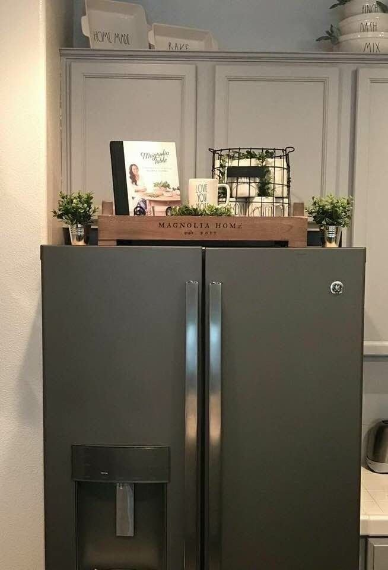
16 Top-of-Fridge Styling Ideas
1. Leave It Empty on Purpose
This counts as a real design choice, not a cop-out.
Intentional emptiness beats messy, half-committed decor every time.
It works especially well for a fridge that reaches the ceiling, a low-ceilinged kitchen, or an already-busy space.
Sometimes the boldest move is doing nothing at all, on purpose.
2. Layered Decor With Height Variation
This approach delivers a styled look without tipping into clutter.
One tall item, one medium object, one low accent.
That variation keeps the eye moving instead of landing on a flat, single-height row.
It is a simple formula that works with almost any object vocabulary already on hand.
3. Neutral Textured Bowls or Trays
A large bowl or tray adds softness and visual weight.
Ceramic, wood, or stone finishes all ground the space well.
It can stand alone as a statement piece, or serve as the base for a small layered display.
Texture alone does a surprising amount of the styling work here.
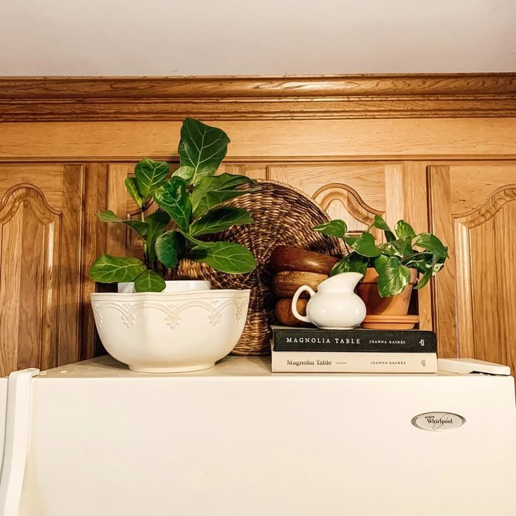
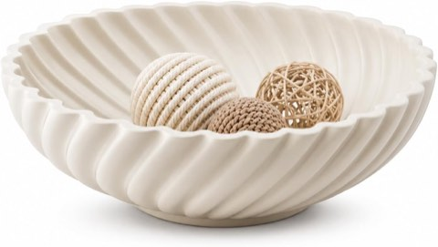
Ceramic Decorative Bowl, 10 Inch, Scalloped Fruit Bowl for Kitchen Counter
Shop on Amazon4. Architectural Elements Like Corbels
This one requires planning ahead, not just shopping for decor.
Decorative corbels or trim built in above the fridge make the whole space feel custom.
It reads as architectural detail rather than an afterthought shelf.
Traditional and farmhouse kitchens benefit from this one most.
5. Neutral Sculptural Objects
Decor that does not announce exactly what it is tends to age better.
Abstract objects, stone spheres, or carved pieces add interest without clutter.
Focus on shape over color, keep the number of pieces minimal, and let negative space do some of the work.
Subtle, done right, often reads louder than anything flashy.
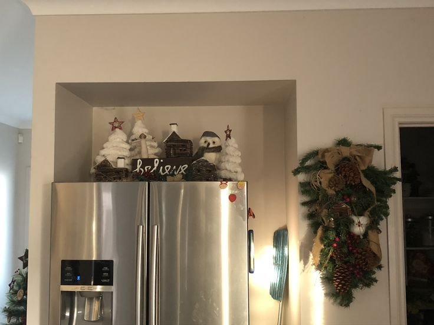
Thinker Statue Set of 3, Sandstone Abstract Resin Sculptures
Shop on Amazon6. Tall Pitchers or Jugs
A classic for a reason.
Ceramic or stone pitchers add real height and a bit of old-world charm.
Pairing one with greenery or a wooden accent rounds the look out further.
This works across farmhouse, modern, and even minimalist kitchens equally well.
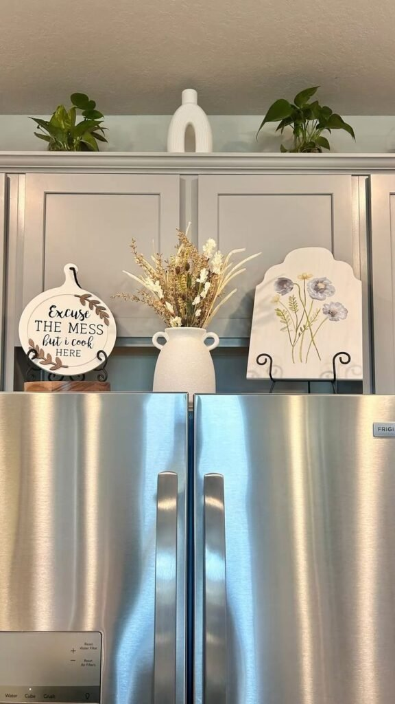
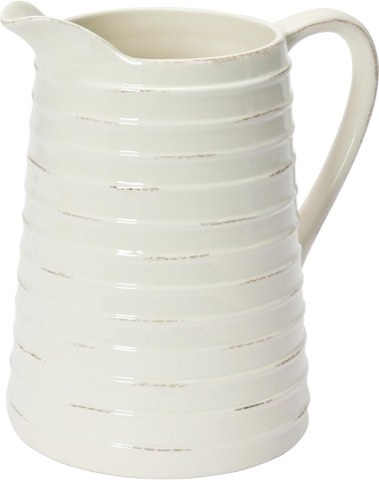
Creative Co-Op 87-Ounce Embossed Stripe Ceramic Pitcher, Distressed White
Shop on Amazon7. Artwork or Framed Prints
Art does not have to stay on the walls.
Leaning a framed print against the wall above the fridge works just as well.
Food illustrations, typography, and abstract pieces all read well in this spot.
Medium to large frames in simple, neutral finishes work best, anything too small gets lost.
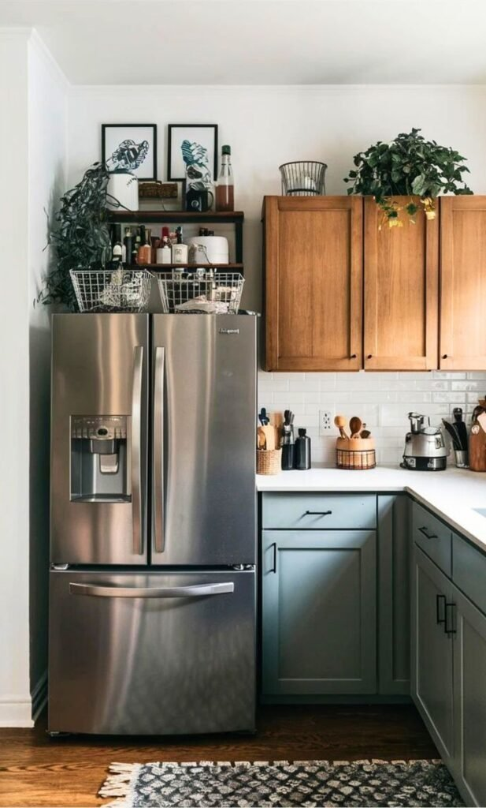
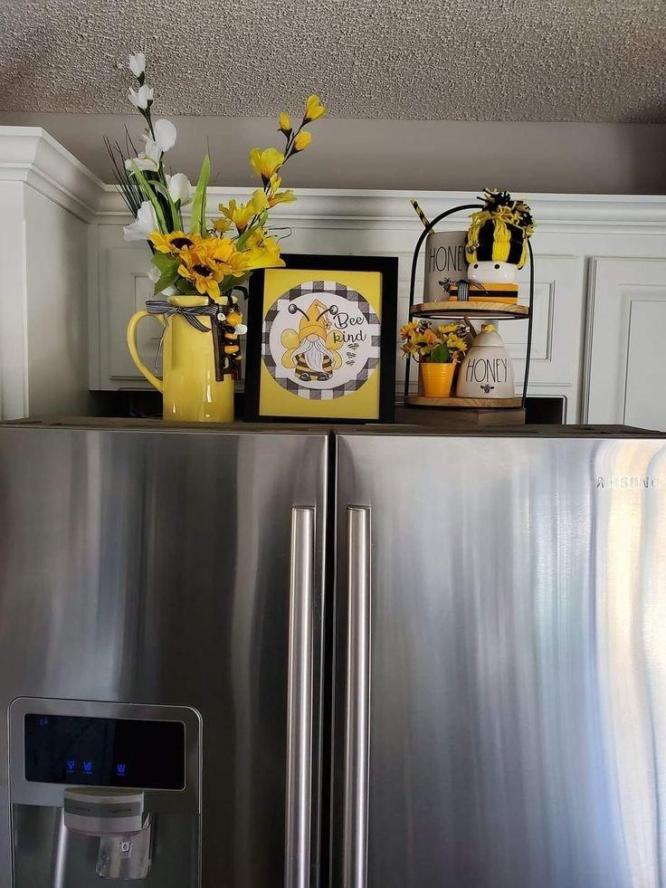
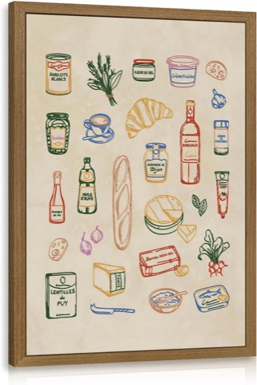
Dynazo Vintage Kitchen Wall Art, Paris Bistro Food and Drinks Illustration Print, Framed
Shop on Amazon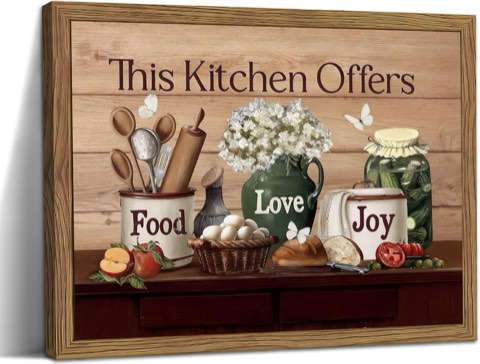
This Kitchen Offers Vintage Rustic Farmhouse Kitchen Wall Art, Framed Canvas
Shop on Amazon8. Matching Storage Containers
Sometimes the top of the fridge just needs to be storage.
That is fine.
Matching containers that look decorative solve both problems at once.
Woven bins, metal boxes, or neutral lidded containers all work.
Uniformity is what tricks the eye into seeing styled decor instead of overflow clutter.
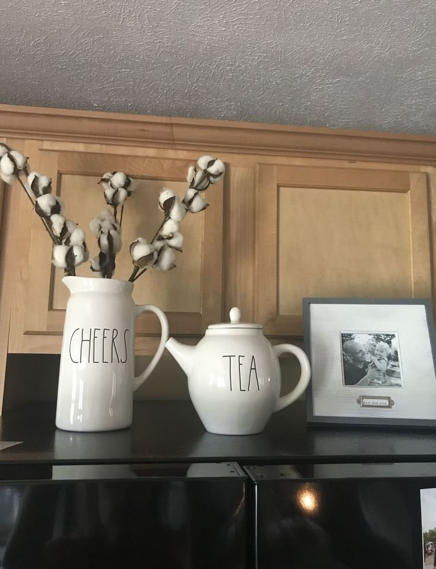
9. Seasonal Decor That Rotates
Switching up what is on top keeps the whole kitchen feeling current.
The top of the fridge works especially well for seasonal accents since they stay out of the way.
Fall foliage, winter greenery, spring florals, summer baskets, whatever fits the month.
One or two seasonal pieces feel festive.
A full display starts to feel frantic.
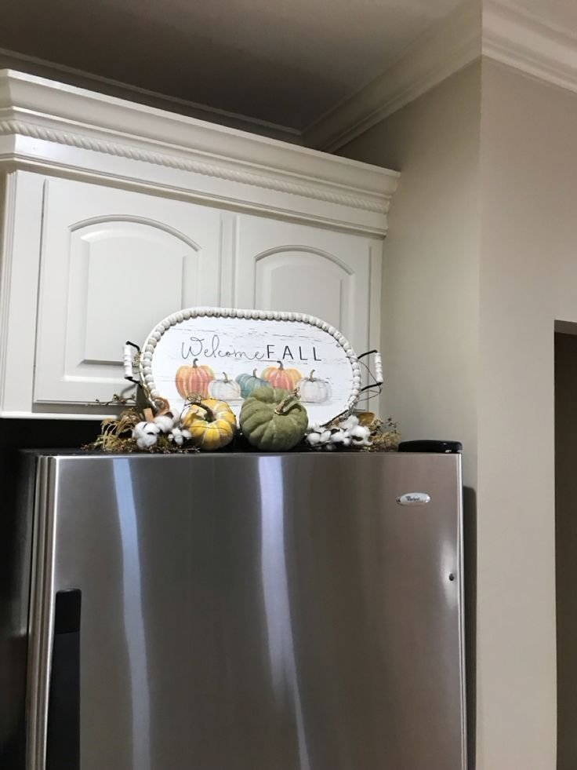

10. Wooden Cutting Boards as Decor
Cutting boards belong up there too, not just in a drawer.
Oversized wooden boards leaned against the wall or fridge surround add real warmth.
They double as function and decoration, grab one down when it is actually needed.
This pairs especially well with a neutral kitchen that could use a bit more texture.
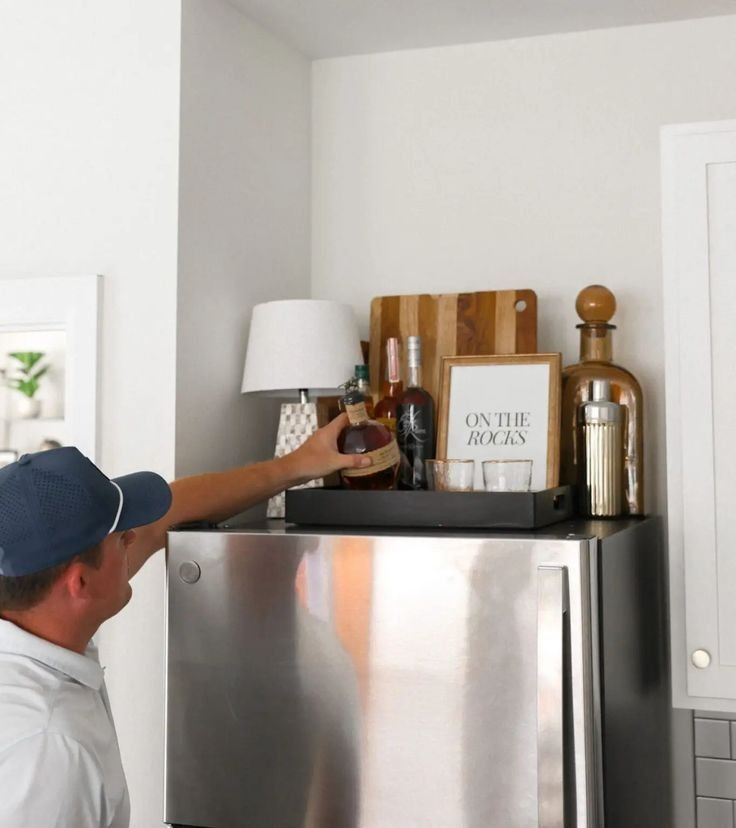
11. Minimalist Ceramic Sculptures
For a modern kitchen, this is the move.
Smooth, abstract ceramic pieces add interest without competing for attention.
One or two pieces is the limit here, any more starts to feel busy.
Neutral tones and clean shapes keep it feeling confident rather than sparse.
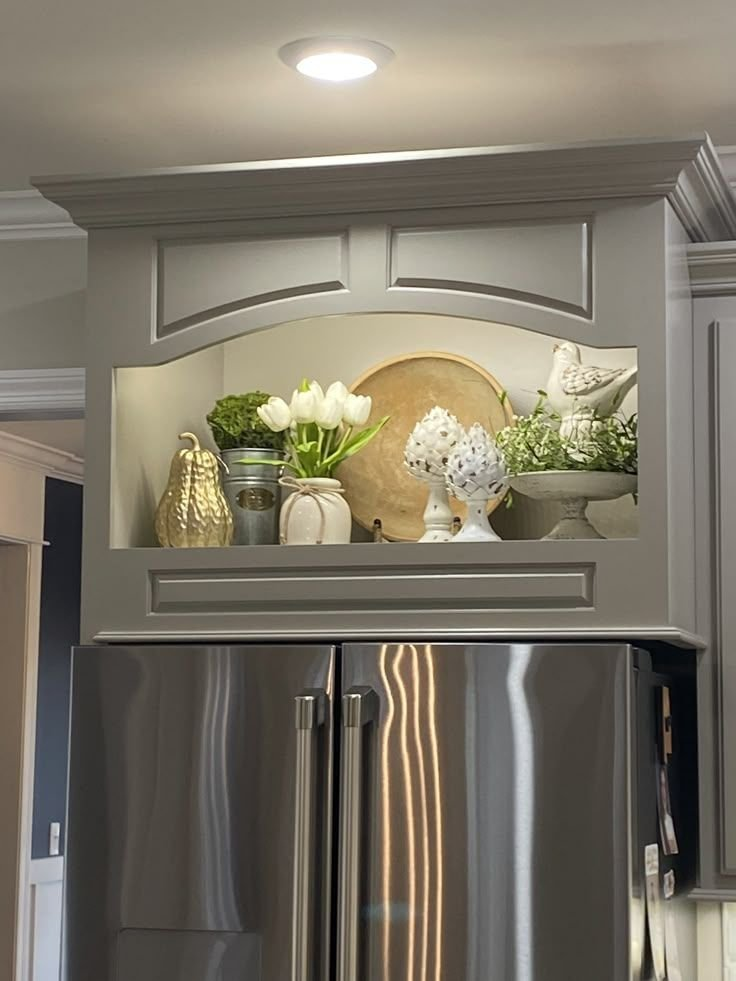
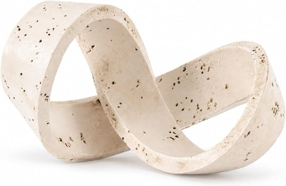
Abstract Knot Sculpture, Ivory Resin Decor for Bookshelf and Coffee Table
Shop on Amazon12. Cookbooks Styled Horizontally
This one only works if the cookbooks themselves look good.
Stack them horizontally, spines facing out, and top the stack with a small object for balance.
Neutral or colorful spines both work, as long as they are not a chaotic mix.
Whether they actually get cooked from is beside the point, they look intentional either way.
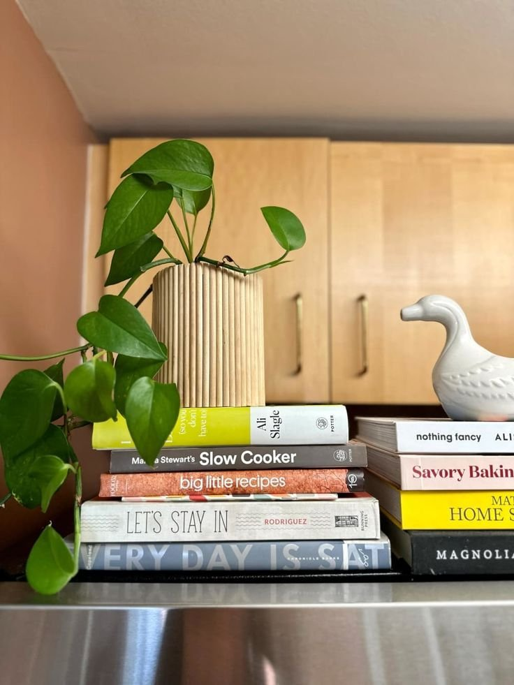
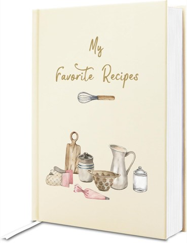
Hardcover Recipe Book to Write in Your Own Recipes, My Favorite Recipes
Shop on Amazon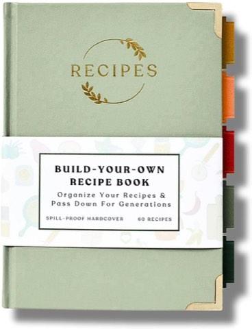
Build-Your-Own Hardcover Recipe Book, Sage Green, Blank Recipe Notebook
Shop on Amazon13. Antique or Vintage Finds
Vintage pieces add soul in a way new decor rarely manages.
Old pitchers, antique bread boxes, and rustic jars all work well up here.
Patina matters, a piece that looks collected over time reads better than one that looks freshly bought.
This idea works especially well in a kitchen that otherwise feels too new or too sterile.
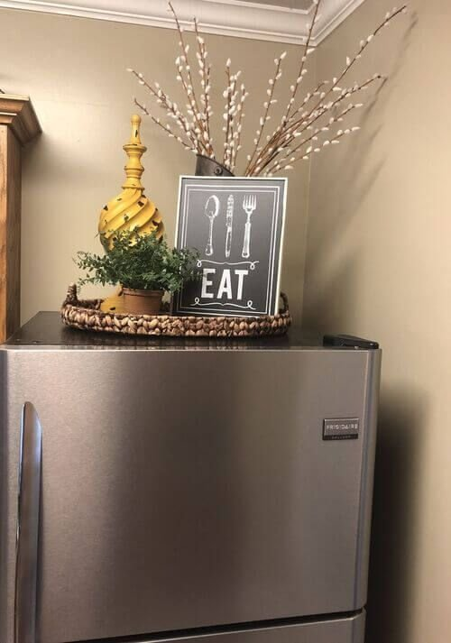

14. Large Decorative Vases
A single oversized vase does more work than a cluster of small ones.
Ceramic or stone in a neutral tone, white, beige, soft gray, tends to feel timeless rather than trendy.
Small vases tend to disappear visually from a distance.
Skip them here.
Keep the color story calm and let the shape carry the look.

Arina White Rustic Large Round Vase, 11 Inch, Earthy Stone Look, Textured
Shop on Amazon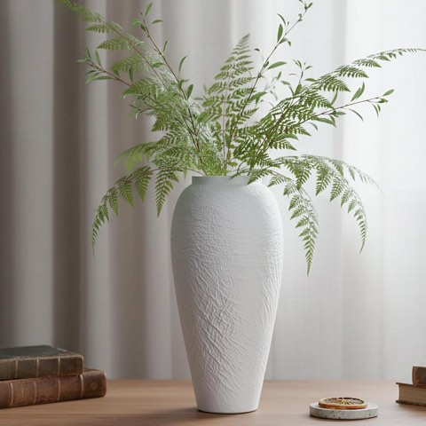
Large White Textured Ceramic Vase, 12.6 Inch Tall, Minimalist Home Decor
Shop on Amazon15. Statement Greenery
Fake or real, greenery softens a hard, boxy appliance almost instantly.
Tall faux plants work best up here, nobody wants to water something out of reach.
Trailing varieties work too, as long as they do not hang low enough to get in the way.
Olive trees, pothos vines, and tall grasses all read well from across the room.
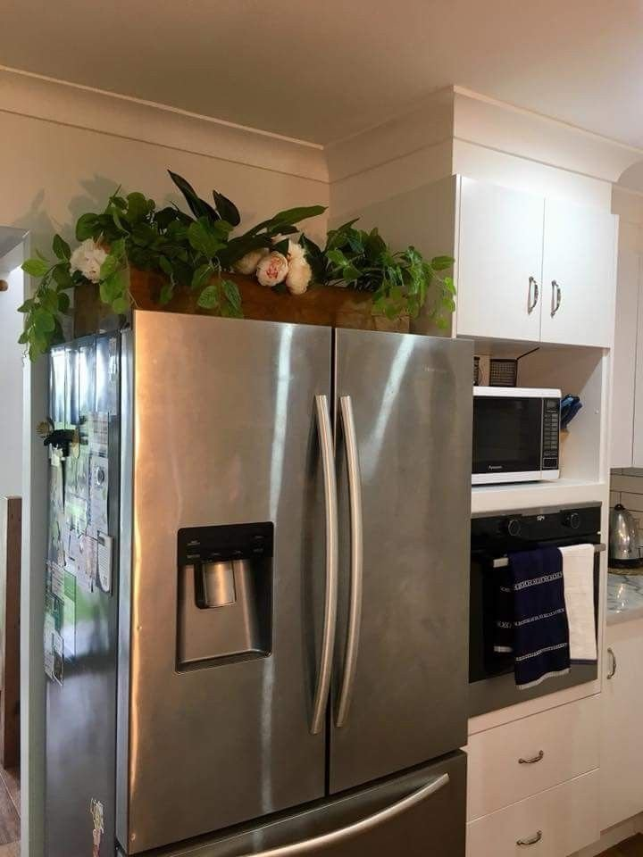
6 Ft Artificial Bird of Paradise Plant, Tall Faux Plant for Indoors
Shop on AmazonRetrograde 32 Inch Faux Pothos Ivy Hanging Plant, Light Green
Shop on Amazon16. Oversized Woven Baskets
Woven baskets add texture instantly.
They also hide the awkward gaps a bare fridge top tends to have.
This works especially well in farmhouse, rustic, or cozy kitchens.
Taller baskets visually extend the height of the fridge rather than just sitting on top of it.
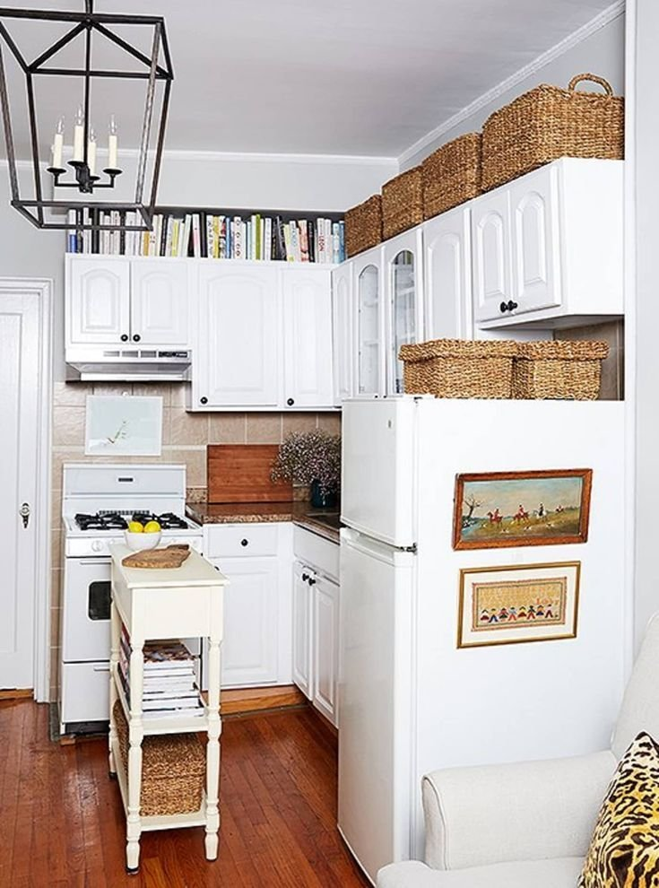


The Mistakes Worth Avoiding
Overcrowding the space is the most common one.
Scale matters more than quantity, one or two large pieces beat five small scattered ones.
Treating the space as hidden storage is another.
Stacked pots and mismatched containers read as clutter, not decor.
Ignoring color balance rounds out the list.
A jumble of clashing tones undercuts an otherwise good layout.
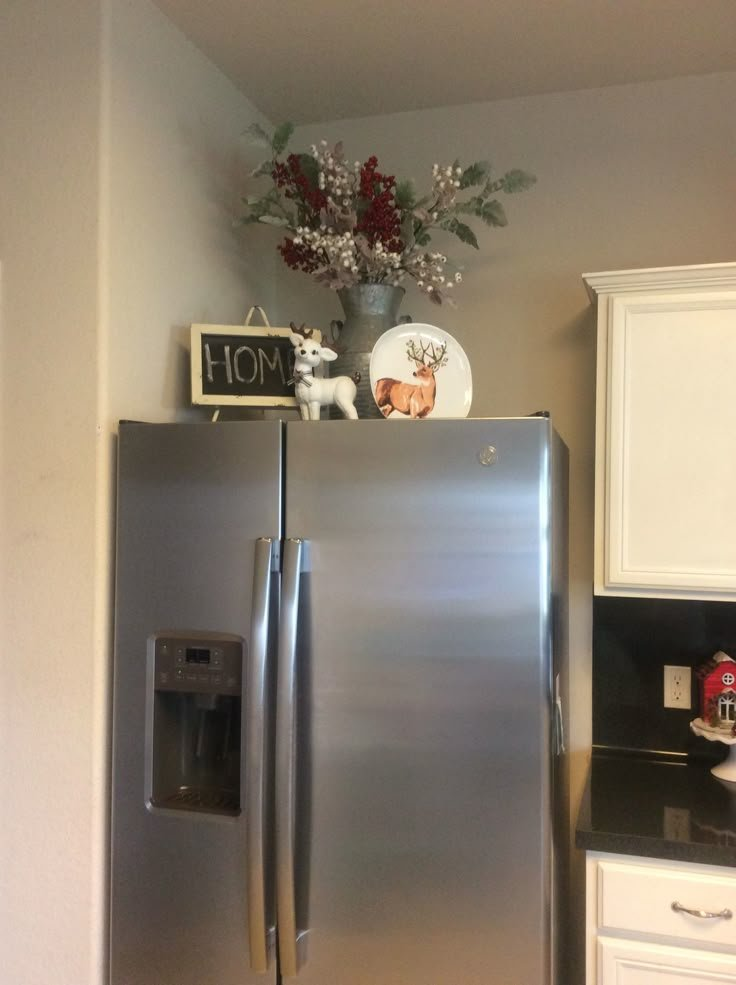
Large Ceramic Flower Vase, 11 Inch Rustic Round White Vase for Centerpieces
Shop on AmazonDecorate It, or Leave It Empty?
Both are legitimate answers.
Decorating makes sense when the fridge does not reach the ceiling, or the kitchen feels like it is missing upper visual interest.
Leaving it empty makes just as much sense for a low ceiling, an already-crowded kitchen, or anyone who'd rather not dust one more surface.
Neither choice is the "correct" one by default.
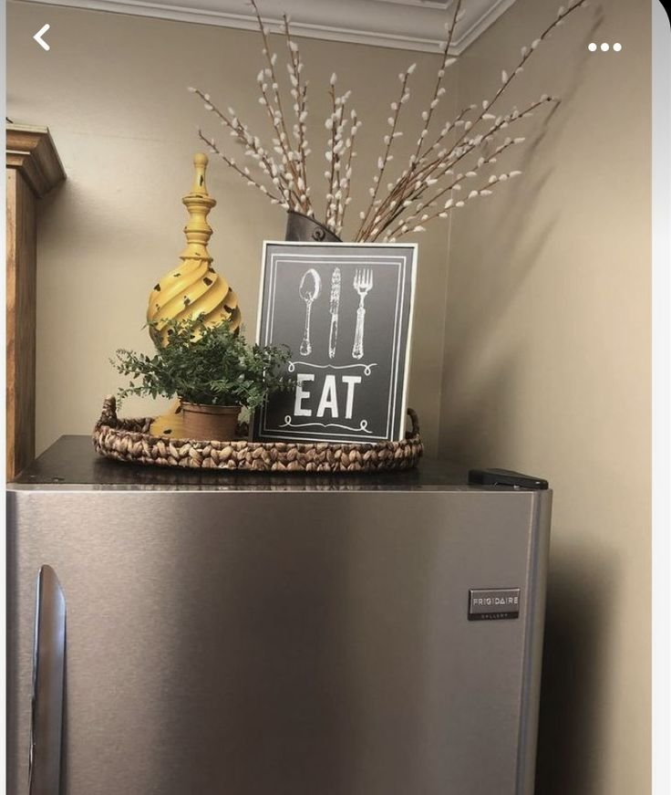
Ceramic Decorative Bowl, 10 Inch, Scalloped Fruit Bowl for Kitchen Counter
Shop on AmazonJoy and Grace Large Acacia Wood Ottoman Tray with Handles
Shop on Amazon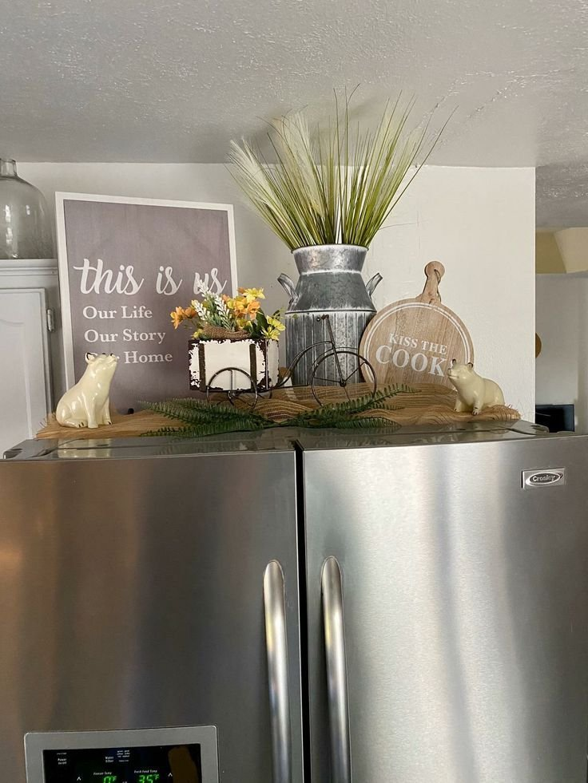
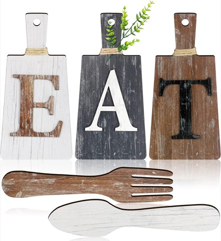
Jetec EAT Cutting Board Sign Set, Kitchen Wall Decor, White, Grey and Dark Brown
Shop on Amazon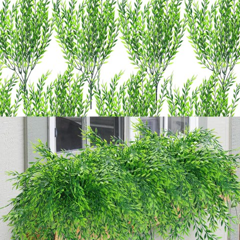
8 Pack Fake Hanging Plants, Weeping Willow Vines, UV Resistant Artificial Greenery Stems
Shop on AmazonFinal Thoughts
Styling the top of a fridge does not take a big budget or a design background.
It just takes intention.
Baskets, greenery, or nothing at all, the deciding factor is whether it looks deliberate.
Start with one idea, live with it for a week, and adjust from there once it is actually been in the room for a while.